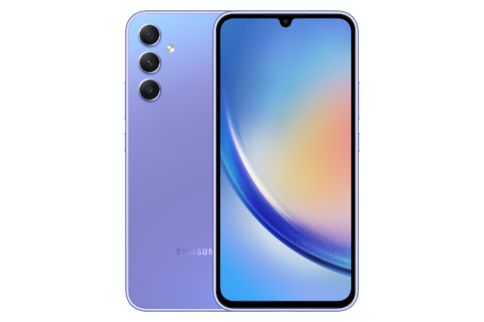
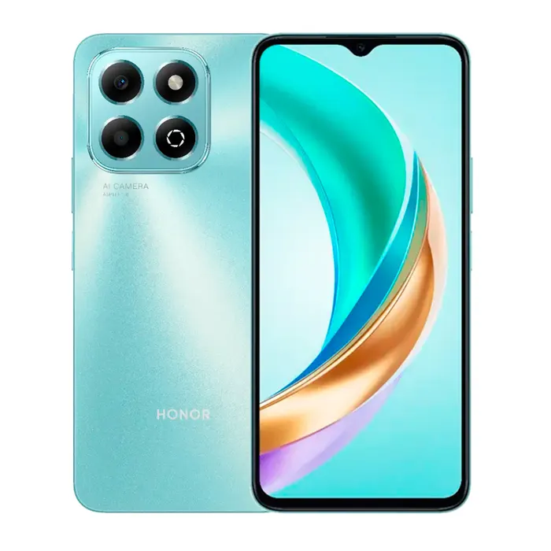
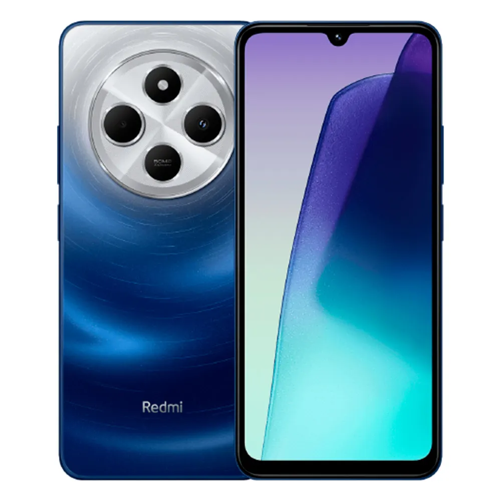
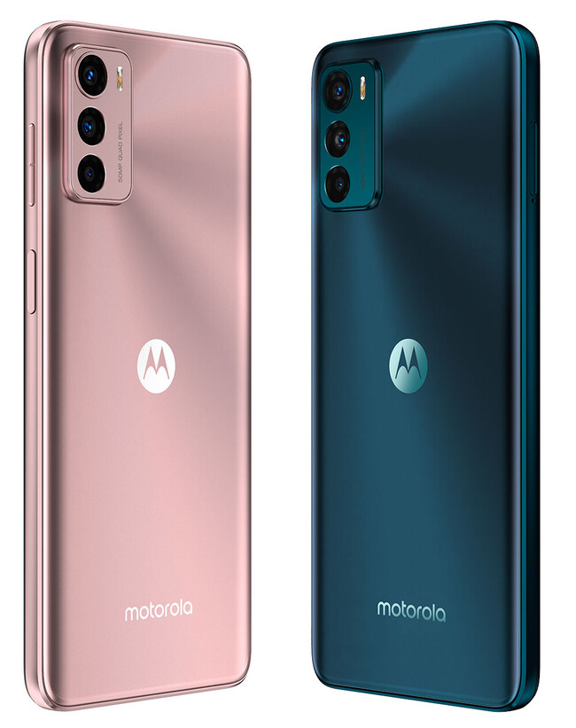

|  | Es difícil denominarlo como gama media dado el precio que tiene, tampoco por características lo es: el Samsung Galaxy A54 pertenece por derecho propio a una gama alta más o menos «accesible». La marca lleva al teléfono gran parte de la experiencia obtenida de móviles como los Samsung Galaxy S23, en el día a día el A54 hasta da el pego como S23. Mis sensaciones fueron muy positivas, en todos los ámbitos. |
| El iPhone dispone de cámara de fotos y un reproductor de música (equivalente al del iPod), además de software para enviar y recibir mensajes de texto y de voz. También ofrece servicios de Internet, como enviar, recibir y leer correo electrónico, cargar páginas web y conectividad por Wi-Fi. | |
|  | El Huawei Honor es el smartphone Android de Huawei más avanzado a la fecha. Cuenta con una pantalla de 4 pulgadas, procesador de 1.4GHz, 512MB de RAM, 4GB |
|  | Los celulares Xiaomi se caracterizan por sus cámaras de alta resolución, pantallas envolventes y rendimiento fluido. Algunos modelos cuentan con certificaciones de resistencia al agua y al polvo. |
|  | Los smartphones Motorola se dividen por las series Moto Edge, Moto G y Moto E. En cada una de estas series de celulares encontrarás equipos de gama alta, media y baja, siendo los modelos de la línea Moto Edge, los equipos de gama superior más populares de la firma estadounidense. En la actualidad, el Motorola Razr 50 Ultra es el celular más potente de Motorola |
| Los celulares Xiaomi se caracterizan por sus cámaras de alta resolución, pantallas envolventes y rendimiento fluido. Algunos modelos cuentan con certificaciones de resistencia al agua y al polvo. |